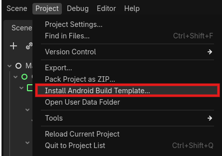
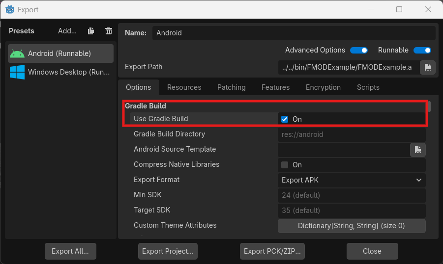

导出说明
本文档说明如何在导出 Godot 项目时正确配置 FmodPlayer 插件。
导出前准备
确认文件结构
确保 addons/ 目录包含以下文件:
res://
└── addons/
└── fmod_player/
├── bin/
│ ├── fmod_player.gdextension # GDExtension 配置
│ ├── fmod.dll # Windows FMOD 运行时
│ ├── fmod_player.windows.template_debug.x86_64.dll
│ ├── fmod_player.windows.template_release.x86_64.dll
│ └── icons/ # 类图标
└── fmod_player_plugin/ # 编辑器插件
├── plugin.cfg
└── fmod_player_plugin.gd
平台特定文件
Windows 导出需要：
fmod_player.windows.template_release.x86_64.dll（发布版）fmod.dll（FMOD 运行库，发布版）
Android 导出需要：
libfmod_player.android.template_release.arm64.solibfmod.so（需要手动添加到 APK）
Godot 导出配置
导出预设设置
打开 项目 > 导出
选择或创建导出预设
在 资源 标签页中：
确保
addons/fmod_player/目录被包含不需要的文件（如
.obj,.os）可以排除
Windows 导出
设置项 |
推荐值 |
说明 |
|---|---|---|
导出路径 |
项目目录 |
便于调试 |
可执行文件 |
自定义名称 |
如 |
嵌入 PCK |
可选 |
单文件发布时启用 |
Android 导出
设置项 |
推荐值 |
说明 |
|---|---|---|
导出格式 |
APK 或 AAB |
根据发布需求选择 |
架构 |
arm64-v8a |
主要目标架构 |
目标 SDK |
30+ |
Google Play 要求 |
FMOD 库配置
Windows
发布时使用 FMOD 发布版库：
# 确保使用 fmod.dll（而非 fmodL.dll）
# 调试版（Debug）：fmodL.dll
# 发布版（Release）：fmod.dll
Android
需要将 FMOD 库打包到 APK：
下载 OpenJDK17
下载 Android SDK
安装 Android 构建模板： 项目 > 安装 Android 模板

将
FMOD runtime library和libfmod_player.so文件复制到res://android/build/libs/debug/和res://android/build/libs/release/目录下将
fmod.jar添加到res://android/build/libs/目录，并在res://android/build/build.gradle中添加依赖：dependencies { implementation files('libs/fmod.jar') }在
res://android/build/src/main/java/com/godot/game/GodotApp.java中加载 FMOD 库：@Override public void onCreate(Bundle savedInstanceState) { // Decide according to your own situation whether to load debug or release version System.loadLibrary("fmodL"); // Debug version System.loadLibrary("fmod"); // Release version SplashScreen.installSplashScreen(this); EdgeToEdge.enable(this); super.onCreate(savedInstanceState); }
在导出设置中选择正确的架构（arm64-v8a）
选择
gradle_build/use_gradle_build选项以使用 Gradle 构建系统

导出 APK 或 AAB 文件
GDExtension 配置
检查 fmod_player.gdextension 文件确保包含发布库路径：
[configuration]
entry_symbol = "example_library_init"
compatibility_minimum = "4.1"
[libraries]
windows.debug.x86_64 = "fmod_player.windows.template_debug.x86_64.dll"
windows.release.x86_64 = "fmod_player.windows.template_release.x86_64.dll"
android.debug.arm64 = "libfmod_player.android.template_debug.arm64.so"
android.release.arm64 = "libfmod_player.android.template_release.arm64.so"
[dependencies]
windows.debug.x86_64 = { "fmod.dll" : "" }
windows.release.x86_64 = { "fmod.dll" : "" }
自定义构建
从源码构建发布版
Windows：
scons platform=windows target=template_release arch=x86_64
Android：
scons platform=android target=template_release arch=arm64
优化选项
# 在 SConstruct 中添加优化选项
# 发布版默认启用优化
# 可以额外启用 LTO（链接时优化）
env.Append(LINKFLAGS=["/LTCG"]) # MSVC
env.Append(CCFLAGS=["/GL"]) # MSVC
调试导出问题
常见问题
FMOD 初始化失败
检查
fmod.dll是否在可执行文件同目录检查音频设备是否正常工作
查看 Godot 控制台错误输出
找不到 GDExtension
确认
.gdextension文件路径正确检查对应平台的 DLL/SO 文件是否存在
检查 Godot 版本兼容性
Android 崩溃
确认所有必要的
.so文件已打包检查 ABI 架构匹配
查看 Android Logcat 日志
日志查看
Windows：
使用 Godot 编辑器的 输出 面板或命令行启动查看日志。
Android：
adb logcat -s godot
adb logcat | grep FMOD
性能优化
导出前优化建议
音频格式优化
背景音乐使用 OGG Vorbis（压缩率高）
音效使用短 WAV 或 OGG
避免使用未压缩的大 WAV 文件
流式 vs 采样
大文件使用
FmodAudioStream音效使用
FmodAudioSample
DSP 效果
移动设备减少 DSP 使用
在总线上共享效果器
通道数限制
设置合理的
max_channels使用虚拟语音系统
发布清单
Windows 发布检查
[ ]
fmod_player.windows.template_release.x86_64.dll[ ]
fmod.dll（发布版，非 fmodL.dll）[ ]
fmod_player.gdextension[ ] 所有音频资源已包含
[ ] 测试音频播放正常
Android 发布检查
[ ]
libfmod_player.android.template_release.arm64.so[ ]
libfmod.so已打包[ ]
fmod_player.gdextension[ ] 目标架构设置正确
[ ] 权限配置（如需录音功能）
许可证合规
FMOD 许可
FMOD 是 Firelight Technologies Pty Ltd 的专有音频引擎
非商业项目可以免费使用
商业项目需要从 fmod.com 获取许可证
需要在游戏中显示 FMOD 署名（非商业）
MIT 许可
Godot-FmodPlayer 插件本身使用 MIT 许可证，可以自由使用和修改。